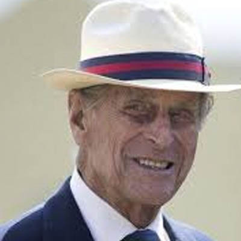

Prince Philip, Duke of Edinburgh
Prince Philip, Duke of Edinburgh (born Prince Philip of Greece and Denmark, 10 June 1921), is the husband of Queen Elizabeth II of the United Kingdom and other Commonwealth realms.
Philip was born into the Greek and Danish royal families. He was born in Greece, but his family was exiled from the country when he was an infant. After being educated in France, Germany, and the United Kingdom, he joined the British Royal Navy in 1939, aged 18.
From July 1939, he began corresponding with the 13-year-old Princess Elizabeth, whom he had first met in 1934.
During the Second World War he served with distinction in the Mediterranean and Pacific Fleets. After the war, Philip was granted permission by George VI to marry Elizabeth.
Before the official announcement of their engagement in July 1947, he abandoned his Greek and Danish royal titles, became a naturalised British subject, and adopted his maternal grandparents' surname Mountbatten. He married Elizabeth on 20 November 1947. Just before the wedding, he was created Duke of Edinburgh, Earl of Merioneth and Baron Greenwich. Philip left active military service when Elizabeth became queen in 1952, having reached the rank of commander, and was formally made a British prince in 1957.
Quick Facts
Some quick facts about about Prince Philip, Duke of Edinburgh - Also fairly random
-
AGE
Born in 1921 - Even older than the Queen-
CHILDREN
He has got some too and they seem to be the same as the Queen's.
-
CARS
He doesn't like hats that much but he really enjoys driving, even at his high age.
-
Early Life
Prince Philip of Greece and Denmark was born in Mon Repos on the Greek island of Corfu on 10 June 1921, the only son and fifth and final child of Prince Andrew of Greece and Denmark and Princess Alice of Battenberg.
A member of the House of Schleswig-Holstein-Sonderburg-Glücksburg, itself a branch of the House of Oldenburg, he was a prince of both Greece and Denmark by virtue of his patrilineal descent from George I of Greece and Christian IX of Denmark, and he was from birth in the line of succession to both thrones; the 1953 Succession Act removed his family branch's succession rights in Denmark.
Philip's four elder sisters were Margarita, Theodora, Cecilie, and Sophie. He was baptised in the Greek Orthodox rite at St. George's Church in the Old Fortress in Corfu.
Headwear
He seems to like it too
Top Hat
Surely the right hat to show off
His collection is not quite as extensive as the Queen's but still very respectable.
| Top Hat | And Again | That's Different | There it is again | Something else |
|---|---|---|---|---|
 |
 |